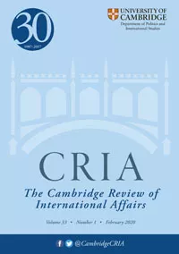

收录于合集

**编者按
**
美国全球战略重心逐渐由西向东转向亚洲，但是奥巴马和特朗普两位总统却实行了看似截然不同的亚洲战略。两位总统的亚洲战略究竟有何异同呢？本文通过批评话语分析对两者亚洲战略的合法化策略和实际举措进行了剖析与对比，发现两者虽然合法化的逻辑不同，但都是对美国亚太轴辐体系的继承与扩充，所谓的“支点”其实从未存在。
作品简介
【作者】 Michal Kolmaš: 布拉格城市大学国际关系助理教授、亚洲研究系副主任。关注东亚安全、日本外交政策、国家认同、后结构主义、环境与非/后西方国际关系理论。
Šárka Kolmašová: 布拉格城市大学助理教授、国际关系与欧洲研究系副主任。关注军事介入、国家保护责任以及国际制度。
【编译】 刘潇昱（国政学人编译员，外交学院国际关系研究所）
【校对】 房宇馨
【审核】 张曼娜
【排版】 杨 洋
【来源】 Michal Kolmaš & Šárka Kolmašová (2019) A ‘pivot’ that never existed: America’s Asian strategy under Obama and Trump, Cambridge Review of International Affairs , 32:1, 61-79, DOI: 10.1080/09557571.2018.1553936.

期刊简介
 《剑桥国际事务评论》（ Cambridge Review of International Affairs ）于1985年创立，是国际关系同行评审学术期刊，以季刊形式发行。由剑桥大学国际研究中心（现隶属牛津大学政治与国际关系学院）编辑，Routledge出版。据2019年Journal Citation Reports显示，该期刊影响因子为1.366。
从未存在的“支点”：奥巴马和特朗普治下的美国亚洲战略
A ‘pivot’that never existed: America’s Asian strategy under Obama and Trump
Michal Kolmaš Šárka Kolmašová
**内容提要
**
本文认为，特朗普总统的亚洲战略相较于奥巴马的“重返亚洲(pivot to Asia)”并未发生根本转变。这是因为“重返亚洲”从未真正“发生”。尽管奥巴马通过国际规范成功地为这一战略建立了合法性，但他未能将自己的高谈阔论付诸实践。虽然特朗普坚定地认为“重返亚洲”是一个糟糕的战略，并完全摈弃了奥巴马再平衡战略的合法性，但事实上他仍旧遵循了奥巴马的许多政策。特朗普的“支点行动(pivot actions)”更像是一种飘忽不定且务实的短期行为，而不像奥巴马的再平衡战略，是一场精心策划的长期战略布局。然而不仅奥巴马未能将这一“支点”转变为有效的战略，特朗普继承下来的亚洲战略也是劳而无功。
**文章导读
**
奥巴马时期，美国提出了“重返亚洲(the American Pivot to Asia)”或“战略再平衡(strategic rebalance)”来应对在亚洲地区地位下降的问题。这一战略再定位涵盖多个层面与领域，旨在通过双边和多边的行为改造曾经的轴辐体系(hub-and- spoke system)。 这一“支点”主要包含五大部分：与盟友的密切合作、协调与其他亚洲国家的关系、与中国建立建设性关系、同东盟开展合作、推动跨太平洋伙伴关系协定落成。 然而直到奥巴马卸任，其设想大都仍是一纸空谈。特朗普上台后更是对奥巴马的这一政策嗤之以鼻。 但是本文认为，尽管特朗普口头上反对前任总统的亚洲政策，但他在实际行动上并没有多大变化。奥巴马的政策在通过强调国际规范和自由国际秩序建立强有力的合法性方面更为成功。特朗普的言辞则基于实用主义和临时性的政治策略。
01
合法化的话语策略
Discursive strategies of legitimization
作者在这一部分阐释了本文的重要概念和理论基础。首先，本文采用了批评话语分析(critical discourse analysis)的方法。这一方法旨在通过细致的语篇语言分析，对互文性(intertextuality)进行解释，并识别这一话语对其他现存语篇的参考，从而揭示隐藏在语篇中的行为意义。其次，本文聚焦分析行为体的合法化策略(strategies of legitimization)。这种策略表明了政治行为体在特定的政治语境中的合法性来源。建构合法性的方式多种多样，本文提出了三种行为逻辑： 理性主义(rationalism)、得体性(appropriateness)和实用主义(pragmatism) 。理性主义在话语上注重物质上的合理利益，比如财富的积累和强大的国防力量。相反地，得体性强调的是文化、规范和认同对国家行为的建构，合法性则来自于那些被广泛认同的规范。上述二者都认为行为体偏好是稳定或者相对可预期的，然而实用主义者的行为则是难以预测的，其行为不由某一套规范或利益所主导，而是根据具体环境决定的，个人信念、经验、期望和创造性智慧在其中都发挥了作用。最后，除了对话语策略的分析，本文也希望了解这些策略与实际决策的有效性的关系。所以为了衡量奥巴马再平衡战略中五大部分的有效性，本文引入了三个指标： （1）物质投入和军事存在的强化，（2）巩固现有联系并与他国建立建设性关系，（3）建构并参与区域组织和全面的多边制度。
02
奥巴马的叙述：美国“太平洋”认同延续的支点
Obama’s narrative: pivot as a continuation of America’s ‘Pacific’ identity
奥巴马亚洲政策最显著的特点是强调规范与价值观，它们被视为该地区稳定、繁荣与安全的“助推器” 。在2010年《美国国家安全战略》( National Security Strategy )报告中首次体现出对美国全球接触(international engagement)政策的规范性合法化。2011年，奥巴马在对澳大利亚议会的一次重要讲话中也使用了类似的言辞来阐明他的亚洲政策。在谈及“再平衡(rebalance)”时， 奥巴马认为其合法性来源于政策的规范基础，即对国际法和人权的尊重以及倡导和平解决冲突。 奥巴马在合法化“支点”战略时都将它与美国在亚洲的长期存在和美国维护该地区和平与稳定的历史联系起来。在2011年的这次演讲中，奥巴马曾16次提及“太平洋”一词，这表明奥巴马希望描绘出一个与亚洲有着内在联系的美国。同时，奥巴马也没有忘记美国在亚洲的利益，而且这一利益往往与规范性价值相联系。比如奥巴马曾提到，为了保障各方的繁荣与安全，需要“负责任地面对如今的挑战”。这类话语主要围绕着得体性的逻辑展开，根据这一逻辑，合作的基础是美国对于其他地区的认同建设，而非物质利益。
03
特朗普的叙述：信念与漠视
Trump’s narrative: belief and disregard
特朗普对其亚洲政策的叙述则更加难以捉摸，相较于奥巴马，他的话语更具有批评性和专断性。中国一直是特朗普主要的“批评”对象，他不断地谴责中国不公平的行为并把中国构建为一个对美国造成安全威胁的国家，甚至将中国视为“敌人”。但另一方面，他又时常声称希望与中国人和平相处。特别是在海湖庄园(Mar- a-Lago)的“习特会”之后，他表示“与习近平产生了良好的化学反应”，并愿意进行合作。 上述情况表明，特朗普对中国的定位往往在敌友之间灵活地转换。 特朗普对其他亚洲国家的调门也有所缓和，只要中日韩满足了美国的一些诉求，特朗普就会好言相向。特朗普在正式访问东南亚并参加东盟会议时，也一改其对这些国家的批评态度，反而表现出友好的一面，并把美国与东南亚的问题归咎于过去的政府。特朗普亚洲政策的合法化策略主要依赖于他的个人信念和实际成就。只要他认为这一政策行之有效，他甚至都不在乎外界对其政策的评价。 他的话语建立在实用主义的逻辑上，取决于特定的政治环境和依据于个人经验的主观判断。
04
双边“支点”
The bilateral ‘pivot’
这一部分作者将根据上文的指标来衡量两位总统亚洲政策在双边层面的落实情况，从而明确其话语究竟是流于表面还是落到实处。从奥巴马的举措看。首先，他于2011年计划扩大在亚太地区的军事部署，这个目标在2017年才得以实现。 实际上这并不是军事存在的强化，而只是对中东地区的军力进行转移，效用十分有限 。其次，虽然奥巴马在规范合法化的基础上成功和积极地促进与亚洲国家的防务合作，但未能实现重大合作和务实性成果。大部分的外交举措只是对现有关系的延续，而并不是他话语中所谓的革命性变化。 **实质上，他推动了一系列离岸平衡和合法性建设 政策 ，旨在恢复美国作为地区领导者的地位。**从特朗普的举措看，尽管他曾公开批评“支点”战略，但仍采取了相似的外交和军事手段。首先，他切实加强了美国在亚太的军事力量，扩充了人员和装备数量。其次，他还修复了与一些亚洲国家（主要是菲律宾、泰国和马来西亚）的关系，在奥巴马时期这些国家曾经因为意识形态和人权问题与美国交恶。但是这些举措也很难被视为美国亚洲政策的显著变化， 军力投入只是总体军事战略的一部分，而并非针对亚洲的某一特定策略，而且特朗普的外交举措也只是对轴辐体系的强化，并无明显变革。
05
多边“支点”
The multilateral ‘pivot’
从奥巴马的多边举措中可以明显地看到他以规范为基础推动地区合作的想法，这一特点在当时美国与东盟的关系中尤为明显。奥巴马多次出席美国- 东盟峰会，于2009年签署了《东南亚友好合作条约》( ASEAN Treaty of Amity and Cooperation )，并借此机会获得了东亚峰会(East Asian Summit)的入场券。在经济领域，奥巴马是亚洲自由经济多边主义的坚定推动者，而其中最主要的部分就是跨太平洋伙伴关系协定(Trans-Pacific Partnership Agreement，简称TPP)，它被奥巴马合法化为整个太平洋区域自由与繁荣的保障。但是美国最终还是退出了该协定，所以TPP很难称得上是奥巴马“支点”战略的主要成就。而且尽管奥巴马言辞高调，参加了东盟会议和东亚峰会，但他的行动对亚洲安全局势的影响甚微。美国并没能在2016年阻止朝鲜的两次核武器试验，也未能在南海问题上发挥有益作用。 总的来说，奥巴马对亚洲采取的多边主义基于规范话语，呼吁自由、民主与法治，并积极推动在亚洲的制度建设与合作，但是却没有落到实处。
与奥巴马相左，特朗普公开批评这些多边倡议和多边贸易条约，并打算通过双边自贸协定来发展对外经济关系。但是他也逐渐改变了调门，在2018年的达沃斯论坛上，他曾表示如果TPP有可能重新谈判的话就会考虑再次加入。对他来说，重新加入TPP有助于美国在与中国打交道时获得更多筹码，这也体现了他的实用主义逻辑。特朗普在对待东盟问题上也经历了一个再评价(re- evaluation)的过程。一开始特朗普对东盟和其他多边组织都抱有批评态度，但是他逐渐采取了更加平和的口吻，希望建立基于公平贸易和互惠性的“友谊”。但是在南海问题上，特朗普对东南亚国家的需求并未积极回应，这主要是因为白宫在朝鲜问题上寻求中国的帮助。 特朗普对这一争端的冷淡态度也表明其实用主义逻辑，他并不完全想遏制中国，而是希望利用中国的崛起服务于美国在亚洲的利益。
06
结语：从未存在的战略
Conclusion: the strategy that never existed
通过对这两位总统的规范性承诺和话语的分析，作者发现他们都没有落实反映再平衡战略最初设想的政策。奥巴马利用理想主义和规范性话语来支撑他的“支点”战略，并成功地在全世界建立其战略的合法性。但是奥巴马的实际政策却没有落实其最初的美好愿景。首先，在遏制中国的问题上他并没有得到亚洲国家的支持；其次，他注重规范的合法化策略反而损害了与几个地区国家的关系；最后，他也没有实现强化美国在该地区军事存在的计划。特朗普虽然对奥巴马的亚洲政策并不看好，但他也没有提出自己的亚洲战略，他的大部分亚洲政策都建立在短期的实用利益和个人信念之上。尽管这种弃规范而重务实利益的政策使特朗普有机会与一些国家冰释前嫌，但这不是一套能服务于“支点”战略的完整政策。尽管两位总统的亚洲战略出于完全不同的动机，但是两者都基本上是围绕轴辐体系和重要盟友展开的。 奥巴马也许更加接受多边主义的规范性观念，特朗普则倾心于务实利益和双边主义，然而两者的政策路线都是大致相同的，这或许是“支点”战略并未真正实现的最好证明。
**译者评述
**
“重返亚洲”战略的提出使得人们认识到美国全球战略的转向，亚太地区开始成为美国对外战略的重心。当然美国其实从来也没有真正离开过亚洲，在冷战期间，美国就曾数次卷入到亚太地区的冲突甚至是战争之中，它为“轴辐体系”的建立也是倾注了不少心血。冷战结束后，克林顿政府和小布什政府都曾有意重塑亚太地区的地缘政治格局，但是这一进程随着“9.11”事件的爆发而被扰乱，反恐战争成为了美国全球战略的重心。【1】直至奥巴马上台，美国才对亚太地区加大军事部署和外交与政治力量的投入。这实际可看作是奥巴马对小布什时期国家安全战略的纠偏，对美国的权力资源的分配和运用方式的调整，将外交理念从现实主义转向自由主义，从而借此维护其霸权基础。【2】在全球政经中心东移和全球化兴起的战略大环境下，奥巴马注重软实力的运用。就如本文所说，美国在多边主义的规范性观念上大做文章。这有利于改善美国在反恐战争时期劣迹斑斑的形象，重塑美国的“善意霸权”。除此之外，奥巴马认识到对亚太地区军事投入扩大的必要性。文章中提到奥巴马时期对亚太地区军事投入效用有限，仅仅是把中东地区的军力向亚太地区转移，没有切实改善亚太的安全环境。但是译者认为，不可否认的是美国通过一系列军事上的行为或表态（提高预算、增派驻军等），确实加强了美国在该地区的军事存在。特别是在美国原本存在感较低的东南亚地区，美国对南海问题的介入使得一些东南亚国家转而投向美国的“怀抱”，巩固了美国在该地区的主导地位，这也足以说明其维护美国利益的效用。2017年特朗普上台后，奥巴马的“重返亚太”战略即被“终结”，当然本文也提到特朗普的政策实际仍然继承了其前任的许多做法，指出特朗普并没有自己的亚洲战略。这一点在特朗普政府的“印太战略”中得到明显印证，在军事领域美国仍延续了再平衡战略中的许多做法：加强前沿力量的部署，强化与印度和东南亚国家的防务关系、与盟友打造小多边安全体系等。在政治领域也保留了再平衡战略中的精髓和手段，比如提及要“建立和维系基于规则的国际秩序”。【3】只是“印太战略”仍然照顾到了特朗普的风格，放弃了多边贸易协定，转而推动双边贸易安排，在外交力量上的投入也远不及再平衡战略。【4】本文创造性地用“实用主义”来形容特朗普在对亚洲各国和亚洲地区多边制度的不确定态度。但是译者也发现，作者提到特朗普对亚洲各国的负面态度和言行大部分来自特朗普竞选期间的言论，而这一态度的转向正是随着特朗普的上台而发生变化。从这一点来看，特朗普竞选期间的言论自然是为了照顾到国内选民和选票而更加激进。如果文章能够更多体现特朗普任职期间对各国态度的巨大转变应该会更有说服力。
参考文献
【1】刘霏.试析美国亚太再平衡战略的演进[J].湖北省社会主义学院学报,2016(01):81-85.
【2】达巍.全球再平衡:奥巴马政府国家安全战略再思考[J].外交评论(外交学院学报),2014,31(02):55-56.
【3】胡波.美国“印太战略”趋势与前景[J].太平洋学报,2019,27(10):23.
【4】胡波.美国“印太战略”趋势与前景[J].太平洋学报,2019,27(10):24.
 文章观点不代表本平台观点，本平台评译分享的文章均出于专业学习之用,
不以任何盈利为目的，内容主要呈现对原文的介绍，原文内容请通过各高校购买的数据库自行下载
文章观点不代表本平台观点，本平台评译分享的文章均出于专业学习之用,
不以任何盈利为目的，内容主要呈现对原文的介绍，原文内容请通过各高校购买的数据库自行下载

好好学习，天天“在看”

国政学人
支持学术公益与知识传播
微信扫一扫赞赏作者 __赞赏
已喜欢，对作者说句悄悄话
取消 __
发送给作者
发送
最多40字，当前共字
上一页 1/3 下一页
长按二维码向我转账
支持学术公益与知识传播
受苹果公司新规定影响，微信 iOS 版的赞赏功能被关闭，可通过二维码转账支持公众号。